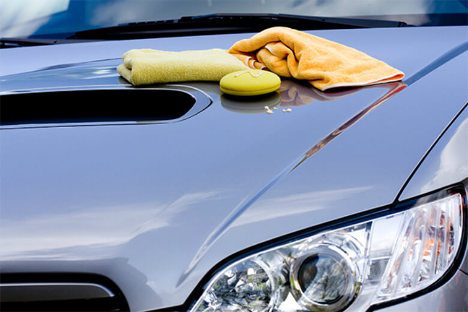

Sobre a Garage Car
Há mais de 10 anos fornecendo lavagem de qualidade à população de Santa Cruz do Sul - RS, a Garage Car se compromete com a limpeza e o cuidado do seu veículo.
Nossa missão é: "tratar o seu carro como se fosse nosso".
Nossos profissionais são treinados e qualificados para os mais diversos tipos de lavagem, sempre buscando a excelência e novidades na área de lavagem automotiva.
Nossa localização
Horário de Funcionamento
Segunda à Sexta: das 8h às 19h
Sábado: das 8h às 16h
Domingos e Feriados: Fechado